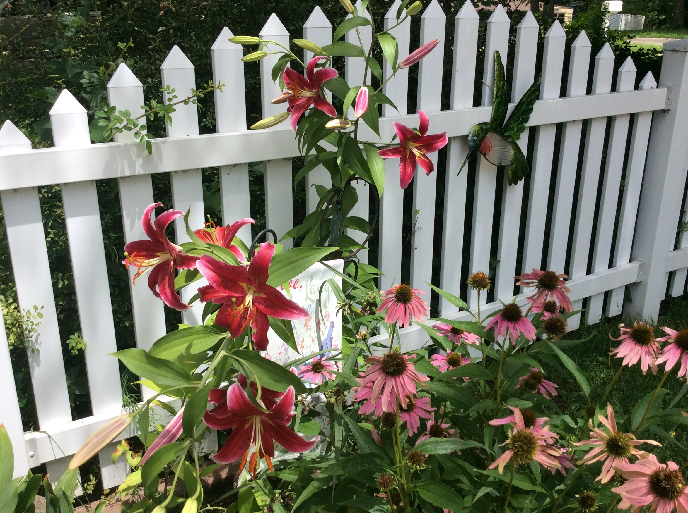

FALL FLOWER PREPARATION
With simple steps this fall, you can begin preparing your plants, for next year's growing season.
By investing time now, you can have an immense display of textures, color and blossoms, summer through fall.

Check these flowers and plants out:
Black Eyed Susans
Coneflowers
Cosmos
Cuphea
Dianthus
Elephant Ears
Ferns
Hyacinth Bean Vines
Lilies
Rose of Sharons
Roses
Sunflowers
Sweet Autumn Clematis
Zinnias